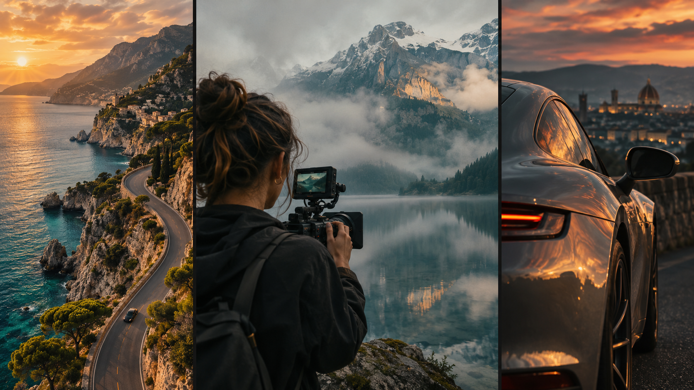

Твоя идея.
Твой следующий фильм.
Собери историю из своих кадров. Добавь выразительный текст,
найди настроение и создай обложку в одном пространстве.

Творчество остаётся твоим.
Инструменты — под рукой.
Скажи главное.
Так, чтобы заметили.
Выразительный текст задаёт интонацию. Примерь контрастную подложку, чистый стиль или контур — и найди тот самый акцент.
Попробовать редакторесть своя история.
Поймай настроение.
Почувствуй ритм.
Плавное появление или резкая смена кадра? Посмотри демонстрации движения и переходов. Выбери визуальный язык для своей истории.
Смотреть примерыПервый кадр —
первое впечатление.
Останови своё видео на нужном моменте, добавь заголовок и сохрани PNG-обложку. Для вертикального ролика, широкого видео или квадратного поста.
Создать обложкуначинается
здесь.
Для видео,
которому есть что сказать.
От материала
к первому результату.
Открыть студию - 01
Открой свой ролик
Выбери видео на устройстве. Файл остаётся в твоём браузере.
- 02
Добавь свой характер
Настрой текст, формат и посмотри пример перехода.
- 03
Сохрани обложку
Выбери кадр и скачай готовый PNG.
За кадром.
Ответы на вопросы.
Что уже работает в редакторе?
Проекты и шаблоны, таймлайн, обрезка и разделение сцен, цвет и кадрирование, титры, SRT, музыка, WebM и PNG.
Это AI-монтаж полного ролика?
Работают ручной монтаж, локальный планировщик по правилам и браузерный экспорт WebM. Нейросети требуют серверного адаптера; распознавание речи и облачный MP4 ещё не подключены.
Куда загружается моё видео?
Никуда. Редактор открывает файл локально в браузере. Видео не отправляется на сервер.
Как заказать работу над роликом?
Открой страницу «Заказать ролик», заполни задачу и скачай бриф. Форма сохраняет файл, но пока не отправляет заявку команде.
Твори.
Остальное — за кадром.
Начни с одного кадра. Найди свой стиль.
Начать создавать